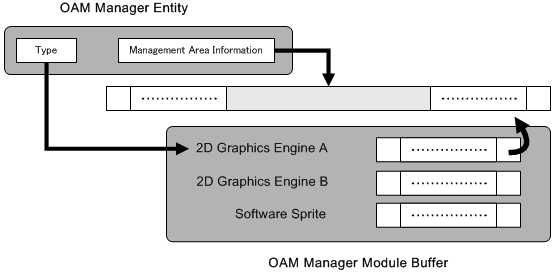

OAM Manager Overview
Conceptual Diagram

Description
The OAM Manager wraps around the OAM of the 2D graphics engine and provides an easy-to-use interface. By using the OAM Manager, it is possible to limit the locations and number of times the OAM is used. The OAM Manager can also render registered OBJs with software sprite rendering. The rendering method is specified when the OAM Manager is created.
The OAM Manager uses the OAM software sprite rendering module as a subcontractor module to make the software sprite rendering feature possible.
OAM Management Feature
The OAM Manager can specify the region it manages from among the 128 OAMs held by the 2D graphics engine. Using this feature, within the OAMs, the user can mix the OBJs they want to display independently alongside the OBJs displayed using the OAM Manager.
Extended OAM Manager
With the Extended OAM Manager, it is possible to virtually display more OBJs than the upper OAM limit of 128 by switching (in order) the OBJs to set in the OAM. The Extended OAM Manager has internal data structure buffers named NNSG2DOamProxy and NNSG2DAffineParamProxy which act as proxies for OAM attributes and Affine parameters (respectively). OAM data registered in the Manager temporarily becomes proxy data and is stored in the previously described buffers. The buffer contents are then applied to the hardware and the render processing is carried out.
By copying the buffer contents to the hardware in time segments, a flicker arises, but it becomes possible to apparently display a number of OBJs greater than the 2D graphics engine's maximum limit. Although the OBJs themselves will flicker, this function can be used to display unimportant game objects.
Processing of the part of the buffer content to be applied to hardware is delegated to an external module via a normal function pointer. Therefore, it is also possible for it to function as a high-level module that a user creates in the OAM Manager.
See Also
None.
Revision History
2004/12/06 Initial version.
CONFIDENTIAL